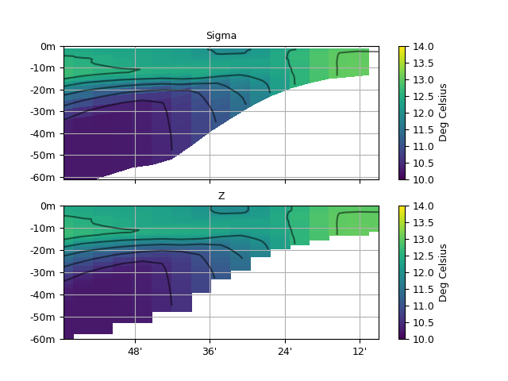

1.3.6.1.1. Sigma to Z interpolation¶
In this example, the input netcdf file must follow the convention of self description of sigma coordinates.

Zonal section of input temperature on vertical sigma coordinates (left), and same field interpolated at constant vertical depths (right).
# -*- coding: utf8 -*-
import cdms2, MV2, os
import numpy as np
from scipy import interpolate
from time import strftime, time
from vacumm.config import data_sample
from vacumm.data.misc.sigma import NcSigma
from vacumm.misc.axes import create_depth
from vacumm.misc.io import netcdf3
from vacumm.misc.grid.regridding import regrid1d
from vacumm.misc.plot import section2
# Initialisation pour un compteur de temps de calcul
print_time_format = "%a, %d %b %Y %H:%M:%S"
t0 = time()
time_format = "%Y%m%d"
date = strftime(time_format)
print "Begin : " + strftime(print_time_format)
# Profondeurs sur lesquelles nous souhaitons interpoler (en m)
depths = np.array([0,1,2,3,4,5,6,7,8,9,10,11,12,13,14,15,16,17,18,19,20,
22,24,26,28,30,32,34,36,38,40,45,50,55,60,65,70,75,80,85,90,95,100,120,140,160])
depths = -depths[::-1] # croissantes et négatives
# Lecture de la température
f = cdms2.open(data_sample('mars3d.tsigyx.nc'))
data_in = f('TEMP') # T-YX (- = level)
# Détermination des profondeurs d'après les sigma
# - détection auto de la classe de sigma d'après fichier
sigma_class = NcSigma.factory(f)
# - initialisation du convertisseur
sigma_converter = sigma_class(copyaxes=True)
# - lecture de eta (sans sélection de domaine) et calcul des profondeurs
depths_in = sigma_converter().filled()
f.close()
# Creation de l'axe des profondeurs cibles
depth_out = create_depth(depths)
# Interpolation
xmap = (0, 2, 3) # la profondeur varie en T/Y/X
xmapper = np.rollaxis(depths_in, 1, 4) # profondeur = dernier axe
data_out = regrid1d(data_in, depth_out, axi=depths_in, axis=1, method='linear', extrap=1)
# Plot
kw = dict(show=False, vmin=10, vmax=14, xhide='auto', add_grid=True, ymax=0)
section2(data_in[0, :, 10], yaxis=depths_in[0, :, 10], subplot=211, title='Sigma', **kw)
s = section2(data_out[0, :, 10], subplot=212, title='Z', savefigs=__file__,
close=True, **kw)
# Sauvegarde
outfile = __file__[:-2]+'nc'
if os.path.isfile(outfile):
os.remove(outfile)
netcdf3()
f2 = cdms2.open(outfile,'w')
f2.write(data_out)
f2.close()
print 'Saved to', outfile
# Temps de calcul
print "Whole computation took %.2f s" % (time() - t0)
print "End : " + strftime(print_time_format)